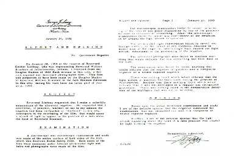
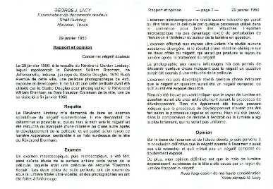

|
|
|
Titre
original de louvrage:
William Branham ein Prophet von Gott gesandt
Auteur:
Missionnaire Ewald Frank, Krefeld (Allemagne)
Copyright © 1994 by
Freie Volksmission e.V., Krefeld (Allemagne)
Traduit
de lallemand. Tout droit de reproduction,même partiel, est réservé.
Editeur
Centre Missionnaire de la Parole Parlée,
Case Postale 5633,
1002 Lausanne
Suisse
|
WILLIAM
BRANHAM
Un prophète
envoyé par Dieu
[RETOUR
Table des matières]
INTRODUCTION
Au cours
de mes voyages pour la publication de la Parole de Dieu, il ma souvent été
demandé de faire paraître quelque chose sur William M. Branham.
Je lai connu personnellement pendant exactement 10 ans (19551965) et jai
été avec lui aussi bien en Europe quaux Etats-Unis. Nous avons
mangé à la même table et avons voyagé dans la même
voiture. Je lai vu vivre en tant quhomme et en tant que serviteur de Dieu.
Il ma été accordé le privilège dêtre un
témoin oculaire et auriculaire du ministère exceptionnel que
Dieu lui avait donné. Ainsi je puis parler et écrire à
son sujet avec une connaissance personnelle et approfondie. Je suis également
en possession de plus de trois cents de ses prédications, et jai pu
de cette manière me faire une opinion générale de sa
manière de prêcher la Parole de Dieu, de son apostolat hors du
commun et du Message que Dieu lui a accordé de porter.
Au cours
de sa vie, ainsi quaprès son départ dans la patrie céleste,
en décembre 1965, il a été particulièrement apprécié
des uns, alors quil était formellement rejeté des autres. Dans
des périodiques chrétiens il a été jugé
très négativement par des auteurs qui ne lavaient pas personnellement
connu, non plus que son ministère. Par contre la presse officielle
en général a parlé de lui positivement. Il est bien connu
que les personnalités publiques sont en majeure partie jugées
très différemment. Mais le sort réservé à
ceux qui sortent des habitudes traditionnelles est particulièrement
mauvais.
Depuis
toujours on a employé la notion de prophètes et de prophétesses
à légard des hommes et des femmes qui se sont présentés
avec une révélation. Nous trouvons cette expression déjà
dans les Saintes Ecritures. Abraham, Moïse, Elie, ainsi que beaucoup
dautres, étaient des prophètes confirmés par Dieu. Par
ce mot de prophète la pensée doit exprimer le fait que ce
nest pas lhomme qui parle, mais bien Dieu Lui-même au travers de lhomme.
En tant que bouche de Dieu sur la terre, le prophète devait être
Son porte-voix; cest la raison pour laquelle nous trouvons dans la bouche
de ces hommes envoyés par Dieu, lesquels ont réellement parlé
au Nom du Seigneur, le AINSI DIT LE SEIGNEUR. Cest uniquement après
que le Seigneur Dieu leur ait parlé de bouche à oreille, cest
à dire dune manière audible, que ces hommes pouvaient dire:
AINSI A DIT LE SEIGNEUR!.
De plus
ils voyaient certains événements en vision et cest pourquoi
ils étaient aussi appelés des voyants. Linspiration de lEsprit
venait sajouter à ce quils avaient vu, et de cette manière
ce qui avait été vu et révélé était
exprimé, puis écrit en tant que Parole de Dieu.
Le prophète
le plus connu de lAncien Testament est Moïse. LInvisible Se révélait
à lui de façon visible sous la forme dun homme et lui parlait
face à face. Le voyant et prophète le plus connu du Nouveau
Testament est lapôtre Jean. Il relate dans le dernier livre de la Bible
ce quil a vu et entendu. Il vit le cours de lhistoire de lhumanité
se dérouler devant lui jusquà la fin, conformément au
plan du salut divin. Il vit même les nouveaux Cieux et la nouvelle terre,
cest à dire le nouveau commencement. Or le Seigneur, lEternel,
ne fera rien, quil ne révèle son secret ses serviteurs les
prophètes (Amos 3.7).
On peut
a juste titre se poser la question de savoir comment différencier un
vrai prophète dun faux, car il en est beaucoup qui prétendent
être envoyés de Dieu. En tout temps il y eut de vrais et de faux
prophètes. Le Seigneur Lui-même nous a prévenus, disant
que beaucoup de faux prophètes se lèveraient dans les derniers
jours, mais Il a aussi fait la promesse denvoyer un prophète à
lexemple dElie avant que vienne le grand et terrible jour de lEternel (Mal.
4.5; Mat.17.11).
Il existe
cependant un critère sûr et constant, un étalon qui doit
être employé pour éprouver les prophètes: Cest
la Parole de Dieu infaillible, Laquelle demeure éternellement et conserve
toute sa valeur. LAncien et le Nouveau Testament renferment le plan parfait
et définitif, conçu par Dieu, du salut révélé.
La personne qui se lève, prétendant être prophète
ou prophétesse, doit être prêt à soumettre ce quil
enseigne, révèle ou pratique, à lépreuve du témoignage
densemble des saintes Ecritures. Dun seul coup et instantanément
la personne en cause se trouve disqualifiée par le moindre rajout ou
déviation, le moindre retrait ou transformation quelle aurait effectué.
Celui qui parle de la part de Dieu, cest à dire celui par lequel Dieu
parle effectivement, celui-ci ne peut dire que ce qui a déjà
été dit. LAncien et le Nouveau Testament, renferment ensembles
toutes les doctrines, la connaissance et les révélations, et
cest la raison pour laquelle intervient la menace du châtiment définitif
porté dans le dernier chapitre de la Bible contre ceux qui ajoutent
ou retranchent quelque chose à la Parole écrite de Dieu. De
toute façon Dieu demeure souverain en ce quIl fait. Il dit: Voici,
je fais une chose nouvelle... (Es. 43.19). Il fait ce qui Lui plaît
sans en avoir fait connaître les détails auparavant.
William
Branham nest pas venu avec de nouvelles révélations; son ministère
consistait uniquement à remettre sur le chandelier ce qui était
déjà attesté de la Parole et nous avait été
transmis par les prophètes et les apôtres. Au travers du ministère
qui lui avait été confié, Dieu fit dune part quelque
chose de nouveau, et dautre part Il fit arriver ce qui était déjà
arrivé auparavant. Celui qui reçoit un tel prophète envoyé
de Dieu, recevra aussi la récompense dun prophète (Mat. 10.41).
Il est
vrai quen apportant une prédication absolument biblique il se mettait
en contradiction avec les interprétations traditionnelles ayant cours
dans les églises officielles ou libres. Cependant, laccord impressionnant
quil y avait entre les Saintes Ecritures, ses doctrines et ce quil pratiquait,
oblige tout homme sincère, quil soit dun clergé ou quil soit
simple laïque, à éprouver lenseignement et la pratique
qui lui sont propres. A tout chercheur sincère de la Vérité
il ne reste alors plus quà se soumettre au seul témoignage
valable devant Dieu, celui des Ecritures. Cest sur la base de ce fondement
inébranlable, le fondement sur lequel lEglise primitive a été
bâtie, que le jugement doit être entrepris.
[RETOUR
Table des matières]
CONFIRMATION
SURNATURELLE
De tous
temps les hommes envoyés par Dieu ont été légitimés
sur terre par un témoignage venu du ciel. Lors du christianisme primitif
la poursuite du ministère commencé par Jésus, le Christ
du Dieu Vivant, se fit après la résurrection du Rédempteur
au travers des rachetés. Après leffusion du Saint-Esprit le
jour de Pentecôte, la prédication apostolique fut accompagnée
de la coopération du Seigneur, qui de cette manière confirmait
la prédication. Cest lEglise primitive qui en toutes circonstances
est lexemple valable pour toute la durée du temps de la grâce.
Le Seigneur donc, après leur avoir parlé, fut élevé
en haut dans le ciel, et sassit la droite de Dieu. Et eux, étant partis
prêchèrent partout, le Seigneur coopérant avec eux et
confirmant la parole par les signes qui laccompagnaient (Marc 16.19,20).
Comment échapperons-nous, si nous négligeons un si grand
salut, qui, ayant commencé par être annoncé par le Seigneur,
nous a été confirmé par ceux qui lavaient entendu,
Dieu rendant témoignage avec eux par des signes et des prodiges, et
par divers miracles et distribution de lEsprit Saint, selon sa propre volonté?
(Héb. 2.3,4).
Quiconque
lit les Actes des apôtres et les épîtres constatera sans
cesse que le Seigneur Dieu confirmait Sa Parole dune manière surnaturelle.
Des signes et des miracles se produisaient en ceux qui croyaient. LEvangile
du Seigneur crucifié et ressuscité victorieusement comprenait
ces deux choses: la bonne nouvelle du salut qui libère et rend heureux,
et la force de Dieu se démontrant envers les croyants (Rom. 1.16,17;
1 Cor. 1.18).
Lhomme
était vraiment entièrement libéré, de telle sorte
que le salut de lâme, la libération de lesprit et la guérison
du corps étaient choses normales lors des cultes de lEglise primitive;
il nous est même relaté la résurrection de morts au milieu
deux. Ainsi précisément, ce qui par lEsprit de Dieu a été
manifesté dans le ministère de notre Seigneur Jésus-Christ
puis dans lEglise primitive est arrivé réellement, et cela
à maintes reprises dans le ministère de William Branham, et
dans une mesure encore plus grande. Il y a des millions de témoins
oculaires de ces faits, et, comme nous lavons déjà mentionné,
le témoignage des prédications enregistrées.
Celui
qui veut comparer cet homme de Dieu à ces évangélistes
bien connus, pour lesquels toutes les méthodes sont bonnes, par exemple
soutirer largent des auditeurs et employer tous les moyens de spectacle possibles,
fait tort à ce véritable homme de Dieu. Si vous interrogiez
ces prédicateurs, aucun deux ne pourrait apporter la preuve dun appel
céleste comme cest le cas de tout homme véritablement envoyé
par Dieu, jusquà et y compris William Branham.
Le Révérend
Gordon Lindsay a écrit le livre Un homme envoyé de Dieu. Nous
pouvons y lire que tous, quils soient amis ou adversaires de cet homme de
Dieu, durent reconnaître que dans ce cas il ne sagissait pas dun homme,
mais bien que Dieu Lui-même était à loeuvre au travers
de lhomme. Après que cet homme simple ait reçu, le 7 mai 1946,
la confirmation de son appel et de son envoi par Dieu, il commença
à tenir des campagnes dévangélisation dun ordre particulier.
Dans les années 1946 à 1949 eut lieu la percée décisive
du plein Evangile des temps modernes daprès le modèle du christianisme
primitif. Les confirmations de ce ministère et les miracles de guérisons
étaient si puissants que des personnes de toutes les dénominations
et de tous les pays affluaient dans les rassemblements. Des politiciens et
des hommes daffaires, même des personnes siégeant au Congrès
à Washington recherchèrent cet homme de Dieu pour quil prie
pour eux.
Dans la
première moitié des années cinquante ses voyages missionnaires
le conduisirent à travers lAfrique, les Indes et lEurope. A Durban,
en Afrique du Sud, on estimait le nombre dauditeurs se pressants dans les
stades à quelques centaines de milliers. A Bombay, en Inde, la foule
fut évaluée à 400 000 personnes. En Allemagne et en Suisse,
selon lendroit, entre 10 000 et 20 000 personnes vinrent aux rencontres.
Dans les pays scandinaves saccomplirent de grands signes et miracles, et
cela particulièrement en Finlande où même eut lieu la
résurrection dun garçon tué lors dun accident. Le roi
George VI dAngleterre demanda à William Branham de prier pour lui.
Ceci eut lieu à Buckingham Palace, alors quil passait à Londres,
entre deux vols, en route pour la Finlande.
Tous ceux
qui se levèrent aux Etats Unis après la deuxième guerre
mondiale, ainsi que ceux qui se levèrent plus tard dans dautres pays
et devinrent des évangélistes connus lui sont directement ou
indirectement redevables de leur ministère, parce quils virent laction
surnaturelle de Dieu dans la vie de William Branham. Celui qui sest fait
connaître dans le monde entier comme M. Pentecôte, feu David
Duplessis, fut si profondément impressionné lors des réunions
en Afrique du Sud, quil décida de suivre William Branham aux Etats-Unis.
Je lai rencontré personnellement à loccasion des conférences
internationales de la foi organisées en juin 1958 par Gordon Lindsay
à Dallas, Texas, dans lesquelles William Branham était le prédicateur
principal. On pourrait énumérer beaucoup de personnes que je
connais personnellement, y compris Demos Shakarian, le président mondial
des hommes daffaires du plein Evangile, qui pourraient, sils vivent encore
et en ont le courage, témoigner de ce ministère à caractère
unique dont ils ont bénéficié.
Ce que
notre Seigneur a dit de Lui-même se rapporte également à
la lettre à cet homme de Dieu. Cest un autre qui rend témoignage
de moi; et je sais que le témoignage quil rend de moi est vrai...
Mais moi, jai un témoignage plus grand que celui de Jean; car les
oeuvres que le Père ma données pour les accomplir ces oeuvres
mêmes que je fais rendent témoignage de moi, que le Père
ma envoyé. Et le Père qui ma envoyé, lui, a rendu témoignage
de moi (Jean 5.32-37). Là où Dieu parle et agit, le témoignage
lui-même a pleine autorité.
Les oeuvres
opérées par Dieu de façon surnaturelle sont la preuve
quil y a là, en rapport avec la prédication de lEvangile de
Jésus-Christ, une personne divinement envoyée. Ce sont ces oeuvres
qui à proprement parler constituent la légitimation irréfutable
et convaincante pour tous les homme. Notre Seigneur disait: Croyez-moi,
que je suis dans le Père, et que le Père est en moi; sinon,
croyez-moi cause des oeuvres elles-mêmes. En vérité, en
vérité, je vous dis: Celui qui croit en moi fera, lui aussi;
les oeuvres que moi je fait, et il en fera de plus grandes que celles-ci
(Jean 14.11,12). Dieu Lui-même a confirmé dans le ministère
de William Branham cette Parole comme étant véritable, de telle
sorte quil ny a pas besoin de lavis des hommes. Moïse et Elie, Pierre
et Paul, bien sûr, tous les hommes que Dieu a envoyés ont été
confirmés par Lui. La même chose peut être dite à
légard de notre frère Branham. De cette manière celui
qui a de la peine à croire en un homme a ainsi la possibilité
de croire Dieu. ... car personne ne peut faire ces miracles que toi tu
fais, si Dieu nest avec lui (Jean 3.2).
[RETOUR
Table des matières]
DES
LENFANCE...
La présence
surnaturelle de Dieu accompagna cet homme dès son enfance. Il y a réellement
des hommes destinés à une tâche particulière dès
leur enfance, et William Branham en fait partie. Ces hommes ne se sont pas,
à un certain moment, désignés eux-mêmes à
cette tâche, se faisant appeler prophètes, mais cest en vertu
dun appel céleste direct quils ont été établis
par Dieu même. Déjà dans son enfance William Branham eut
la vision dévénements qui se sont tous accomplis souvent bien
des années plus tard.
A lâge
de sept ans il entendit une voix provenant dun tourbillon de vent semblant
se manifester dans la couronne dun arbre, alors que partout ailleurs il ny
avait pas de vent. Il lui fut dit: «Ne bois ni ne fume jamais, ne souille
ton corps daucune manière, car tu auras une oeuvre à accomplir
pour Moi lorsque tu seras plus âgé». Plusieurs fois dans
sa jeunesse il fut incité par des amis à boire ou à fumer.
Ils le traitèrent de lâche, et cest précisément
ce quil ne voulait pas être car finalement, en tant que boxeur, il
manifesta quil nen était pas un. Il semble que chaque fois quil
essaya de boire ou de fumer il entendait à nouveau le même bruit
de vent et la même Voix qui lui avait défendu de faire ces choses.
Cest ainsi quil fut gardé de la désobéissance. Nous
savons quElie a tout dabord entendu la tempête avant que le Seigneur
lEternel ne lui parle à la montagne dHoreb (1 Rois 19). Job entendit
la Voix du Seigneur directement du milieu de la tempête (Job 38.1).
Celui qui fait de ses anges des vents... (Héb. 1.7). Ces choses
sont encore valables aujourdhui.
Alors
que William Branham était jeune homme il fut ordonné ministre
dune église baptiste par le Dr Roy Davis. Peu de temps après
cela il commença un ministère non attaché à une
confession particulière, car il se savait appelé à être
au service de tous.
En juin
1933 plusieurs choses de grande importance eurent lieu. Il tint sa première
campagne dévangélisation. A la fin de cette série de
réunions un service de baptême eut lieu, le dimanche 11 juin
1933, dans le fleuve Ohio selon le modèle des premiers chrétiens.
Quelques centaines de nouveaux convertis se firent baptiser. Lorsque le jeune
prédicateur était sur le point de baptiser la dix-septième
personne il pria, disant: «Père, de même que je les baptise
dans leau, veuille Toi aussi, me baptiser ainsi du Saint-Esprit». Cest
à cet instant que la chose arriva: du ciel descendit une Lumière
brillante semblable à une étoile, laquelle sarrêta au-dessus
de lui. De cette Lumière retentit une Voix disant: «De même
que Jean-Baptiste a été envoyé comme avant-coureur de
la première venue de Christ, ainsi seras-tu envoyé avec un Message
qui sera avant-coureur de la deuxième venue de Christ». En avril
1966, à loccasion dune rencontre aux Etats-Unis, jai rencontré
personnellement environ 12 personnes ayant été présentes
lors de cet événement survenu en juin 1933.
La réaction
des quelque 4000 personnes qui assistèrent à cet événement
fut diverse. Les uns priaient, dautres tombèrent sans connaissance,
dautres encore demandèrent ce que cela pouvait bien signifier, alors
que quelques-uns ne prirent pas garde à cet événement.
LAssociated Press des Etats-Unis et du Canada, particulièrement, rendirent
compte de cet événement extraordinaire. A cause des événements
extraordinaires qui encore par la suite se succédèrent dans
la vie de cet homme de Dieu, et plus particulièrement en ce qui concerne
les 7 visions reçues en 1933 sur la développement mondial devant
saccomplir jusquà la fin, firent que les autres prédicateurs
se distancèrent de plus en plus de lui. Même ceux parmi les plus
proches de lui admettaient bien que de tels événements aient
eu lieu dans les temps bibliques, mais ils nièrent quils puissent
avoir lieu encore maintenant.
Parce
que le Seigneur avait dit à Son jeune serviteur quil serait envoyé
dans le monde entier et quil prierait pour des rois et des chefs de gouvernement,
le Dr Roy Davis lui dit: «Billy, mais qui voudra donc bien técouter?
Toi qui nas reçu quun enseignement primaire ... Tu prêcheras
aux colonnes de la chapelle et à des chaises vides. Les gens ne viendront
pas técouter». Sa réponse fut simple: «... Si cest
Dieu qui menvoie, cest aussi Lui qui enverra les gens à qui je prêcherai...».
Le
7 mai 1946 William Branham reçut réellement une visitation céleste.
Dans lAncien comme dans le Nouveau Testament nous trouvons beaucoup de récits
où des anges apparaissent lors dévénements particuliers.
Nous voyons cela dAbraham à Daniel, et de Zacharie à Marie.
Les armées célestes apparurent dans les champs de Bethléem,
et cest un ange qui apporta la plus glorieuse nouvelle de tous les temps,
cest à dire lannonce de la naissance du Rédempteur. Paul,
ainsi que Jean, qui avait été exilé sur lîle de
Patmos, rendent témoignage de visitations angéliques. Lisons
ceci au sujet des anges, dans Hébreux 1: Ne sont-ils pas tous des
esprits administrateurs, envoyés pour servir en faveur de ceux qui
vont hériter du salut? (v. 1).
Au soir
du 7 mai 1946 William Branham se trouvait dans une pièce où
il avait déjà passé quelque temps dans la prière
et la lecture de la Bible. Subitement, vers 23h, vint den haut une Lumière
entrant dans cette pièce; Elle sétendit de plus en plus et
sintensifia. Ecoutons ce que William Branham dit lui-même de cet événement:
«
Lorsque je regardai je vis cette grande étoile suspendue.
Toutefois elle navait pas cinq pointes, mais elle ressemblait davantage à
une boule de feu qui rayonnait, et elle éclairait le sol. Puis jentendis
quelquun marcher. La frayeur me saisit encore davantage, car je savais que
personne ne serait venu dans ce lieu excepté moi-même. Dans cette
Lumière je vis venir à moi un homme aussi naturellement que
vous venez vers moi. Jestimais que cet homme devait peser dans les 85
kilos, et il portait un vêtement blanc. Son visage était
lisse, sans barbe, ses cheveux noirs descendaient jusquaux épaules,
son teint était plutôt foncé, et il avait une apparence
très agréable. Il sapprocha encore davantage et nos regards
se croisèrent. Il vit ma frayeur et me dit: Ne crains pas. Jai été
envoyé de la présence du Dieu Tout-puissant pour te dire que
ta vie particulière et le chemin mal compris qui est le tien indiquent
que Dieu ta envoyé vers les peuples de la terre avec un don de guérison
divine. Si tu es sincère et arrives à faire en sorte que des
gens te croient, aucune maladie ne pourra résister à ta prière,
même pas le cancer. Les mots me manquent pour exprimer ce que je ressentis
à ce moment-là».
Lexpression:
Ne crains pas! a aussi été employée par lAnge lorsquil
visita Daniel, Zacharie et Marie. Notre Seigneur Jésus lemploya également,
et souvent Il dit: Ne crains point.
LAnge
dit encore à William Branham: «De la même manière
que deux signes ont été donnés à Moïse (Ex.
4), ainsi deux signes te seront donnés. Sils ne croient pas le premier,
ils croiront le deuxième». Presque les mêmes paroles se
retrouvent dans Exode 4.8: Et il arrivera que, sils ne te croient pas
et nécoutent pas la voix du premier signe, ils croiront la voix de
lautre signe. Les hommes ayant reçu un appel particulier de Dieu
reçoivent aussi des signes particuliers de Lui, afin que par ces choses
les gens prennent conscience du fait que dans ce cas spécial cest
Dieu Lui-même qui parle et qui agit.
Puis lAnge
lui expliqua le premier signe. Après la prédication de la Parole
et la prière avec ceux qui consacreraient alors leur vie au Seigneur,
il devrait prier pour les malades. Le premier signe consisterait en ce quil
prendrait la main du patient dans sa propre main; sur le dos de sa main se
présenterait alors à ses yeux de quoi souffrirait littéralement
la personne, la maladie se manifestant par des changements de couleur et certaines
conformations de la peau. Ensuite suivrait la prière pour la guérison.
Le patient devait suivre lévénement en observant la main. Lorsque
la prière avait été exaucée, et que Dieu avait
effectué la guérison, le signe identifiant la maladie disparaissait
sous les yeux du malade. Cette manière dannoncer lEvangile fut confirmée
des milliers de fois, et cela plus particulièrement dans les années
1946 à 1949. Beaucoup de personnes guéries au moyen dun tel
miracle de Dieu le ressentaient dans leur corps et voyaient cette guérison
saccomplir sous leurs yeux, et très nombreuses étaient les
personnes qui criaient à haute voix tant elles étaient saisies
par cette oeuvre de Dieu.
Puis lAnge
lui expliqua lusage du deuxième don, et cela en citant plusieurs passages
bibliques. Il se rapporta au ministère de notre Seigneur Jésus,
lui expliquant plus particulièrement Jean 5.19,20, à savoir
que Jésus en tant que Fils de lhomme avait agi comme un prophète,
quIl avait des visions Lui montrant ce que Dieu voulait faire. En vérité
en vérité, je vous dis: Le Fils ne peut rien faire de lui-même,
à moins quil ne voie faire une chose au Père quelque chose
que celui-ci fasse, cela, le Fils aussi de même Je fait. Car le Père,
aime le Fils, et lui montre toutes les choses quil fait lui-même
(Jean 5.19,20). Conformément à cette parole, le Fils
de lhomme na exercé son ministère que suivant ce qui lui était
montré en vision. LAnge mentionna les deux événements
de Jean 1, concernant Pierre et Nathanaël. Nous lisons que lorsque André
conduisit son frère Simon à Jésus: Jésus,
layant regardé dit: Tu es Simon, le fils de Jonas; tu seras appelé Céphas (qui est interprété Pierre) (v. 43).
Il navait jamais vu Pierre auparavant, et cependant Il connaissait
son nom et le nom de son père. La même chose arriva avec Nathanaël,
que Philippe conduisit au Seigneur: Voici un vrai Israélite, en
qui il ny a pas de fraude
Avant que Philippe teût appelé,
quand tu étais sous le figuier, je te voyais (v. 48,49). Tous
peuvent lire combien Nathanaël fut saisi par cette révélation,
et de quelle manière il réagit.
LAnge
poursuivit en se référant à Jean 4 et il évoqua
la conversation ayant eu lieu entre le Seigneur Jésus et la Samaritaine
au puits de Jacob. Par révélation, et conformément à
ce qui lui avait été montré, Jésus lui dit: ...
car tu as eu cinq maris, et celui que tu as maintenant nest pas ton mari
(v. 18). A la fin de la conversation la femme sécria: Je sais
que le Messie qui est appelé le Christ, vient; quand celui-là
sera venu, il nous fera connaître toutes choses. Jésus lui dit:
Je le suis, moi qui te parle (v. 25,26). LAnge se référa
à dautres passages bibliques encore où de semblables événements
arrivent, là où le ministère prophétique du Fils
de lhomme ressort particulièrement. Cest précisément
lors de la manifestation de ce ministère de Fils de lhomme que les
pharisiens ont péché en disant: Cest par Béelzébul
quil fait ces choses!, et ainsi de suite. En tant que Prophète le
Fils de lhomme reconnaissait même les motifs et les pensées
du coeur, et cétait cela précisément qui en particulier
ne plaisait pas du tout aux conducteurs spirituels de ce temps-là.
Cependant cest ainsi que les esprits étaient découverts et
séparés. LEternel Dieu avait dit à Moïse: Je
leur susciterai un prophète comme toi, du milieu de leurs frères,
et je mettrai mes paroles dans sa bouche, et il leur dira tout ce que je lui
commanderai (Deut. 18.18; Act. 3.22,23).
LAnge
exprima encore que ce même Signe du Messie devait être manifesté
de nouveau maintenant dans lEglise des nations, comme il lavait été
autrefois au milieu des Juifs et des Samaritains. Au commencement de presque
tous les services de guérison quil tenait, William Branham se rapportait
à ces passages de lEcriture que lAnge lui avait littéralement
expliqués. Le deuxième don consistait en ce que précisément
en raison de ce que Dieu lui montrait il pouvait, pendant le service de guérison,
dire aux personnes de quel pays ou de quelle ville elles venaient, comment
elles sappelaient, qui elles étaient, quelles maladies elles avaient,
et, à proprement parler, tout ce qui les concernait, de la même
manière que cela était arrivé dans le ministère
prophétique du Fils de lhomme. Jai personnellement été
souvent témoin de ces choses dans les réunions, et la surprise
na pas été petite pour moi lorsque cet homme de Dieu, le 3
décembre 1962, me répéta exactement les paroles que le
Seigneur mavait adressées le 2 avril 1962, avant le lever du soleil,
ici à Krefeld. Il ne sagit pas là de choses inventées
pour être mises en avant, mais bien dun témoignage conforme
à la vérité devant le Dieu Tout-puissant, de ce que Jésus-Christ,
dans notre génération, Sest fait connaître au travers
de ce ministère prophétique de la même manière
quaux jours où en tant que Fils de lhomme Il marchait sur la terre.
[RETOUR
Table des matières]
SOUS
UN CIEL SEREIN
En novembre
1949 William Branham informa les Révérends Jack Moore et Gordon
Lindsay, lesquels avaient déjà participé à son
ministère sur la côte Ouest des Etats Unis, quil tiendrait des
rassemblements en janvier 1950 à Houston, Texas. La nouvelle sen répandit
très rapidement et des gens vinrent des environs, de telle sorte que
toute la ville fut en ébullition. Les conducteurs spirituels qui navaient
aucune compréhension spirituelle des choses sexcitèrent et
portèrent des critiques destructrices sur ces rencontres. Parmi ceux-là
séleva le Révérend Dr Best, lequel convoqua la presse
et organisa pour le 24 janvier 1950 une discussion publique avec William Branham
au Sam Houston Coliseum sur le thème Aujourdhui des guérisons?,
à laquelle environ 8000 personnes prirent part. Il invita aussi les
deux photographes professionnels, M. James Ayers et M. Ted Kippermann, afin
quils fixent sur la pellicule tout particulièrement les moments les
plus impressionnants.
Cest
le Dr Best qui apporta le défi, et il était opposé au
Dr F.F. Bosworth, un enseignant de la Bible que jai connu personnellement.
Lui-même était un de ceux qui accompagnaient William Branham,
et il fut prié de conduire la discussion. Des heures sécoulèrent
autour de ce spectacle indigne. Pendant la discussion le foule se partageait
entre ceux qui criaient à haute voix «Amen!» et les autres
qui sopposaient en criant également à voix forte «Non!».
Mais lorsquil fut demandé à lauditoire: «Combien dentre
vous ont déjà été guéris lors de ces réunions?»,
des centaines de personnes se levèrent. Lopposant dû reconnaître
sa défaite, bien quil le fit avec des remarques acerbes. Lorsque cette
partie de la discussion fut terminée, William Branham vint sur le podium.
Jusque là il sétait tenu sur la galerie et avait tout entendu,
car bien sûr il sagissait de lui-même et de son ministère,
et plus spécialement du don de guérison pour les malades. Cest
avec calme quil sapprocha du microphone, et il dit: «Je ne suis pas
venu ici pour me défendre. Si cest Dieu qui ma envoyé, alors
cest Lui aussi qui combattra pour moi».
A cet
instant M. Ayers prit la photographie sur laquelle se trouve la colonne de
feu au-dessus de la tête de William Branham. La réunion sétait
terminée tard, et il était presque minuit lorsque M. Ayers,
qui approuvait les critiques faites par le Révérend Dr Best
et était de son parti, fut saisi de stupeur et fut comme hors de lui.
En effet, toutes les photographies quil avait faites étaient nulles,
à lexception dune seule, celle où se trouvait la lumière
surnaturelle au-dessus de la tête de William Branham. Cette même
nuit M. Ayers se rendit en hâte à lhôtel où résidait
William Branham pour lui demander sil savait quune Lumière surnaturelle
sétait tenue au-dessus de lui.
Comme
il sagissait dun tel phénomène surnaturel il fut décidé
que ce négatif serait soumis à lhomme le plus qualifié
de lEtat concernant les documents douteux, le Dr George J. Lacy. Cest par
écrit que celui-ci fit connaître le résultat de ses recherches,
et il confirma qu'aucune retouche ni double exposition de la pellicule navaient
été décelées. Il déclara que cette colonne
de Lumière avait été réellement présente,
sinon la caméra naurait jamais pu la fixer sur la pellicule. Vous
pouvez lire le rapport original du Dr Lacy à la fin de cette brochure.
Chaque
fois que William Branham, au travers du don de révélation et
de discernement, devait prier pour la guérison dune personne, cette
Lumière sinclinait sur cette personne. Il voyait tout ce quil devait
communiquer de la part de Dieu à la personne concernée, afin
de lédifier et de la fortifier dans la foi en la présence de
Dieu, et par cela même dans la foi en sa propre guérison par
Dieu. Parmi les milliers de cas rencontrés en presque vingt ans dans
lexercice de ce ministère unique, pas une seule fois cela na manqué.
Toujours tout savérait être juste, et cela à cent pour
cent. A quelquun qui lui demandait sil ne craignait pas de dire toutes ces
choses à des personnes quil ne connaissait absolument pas et dont
il ne savait rien du tout, il répondit: «Pourquoi devrais-je
craindre que quelque chose ne soit pas exact, alors que cest Dieu Lui-même
qui me les montre et qui parle au travers de moi?».
William
Branham mentionna plusieurs fois le fait que cette photographie remarquable
était lunique photo existant au monde dun être surnaturel,
et que celle-ci se trouvait à Washington, D.C. Moi-même ai vu
là-bas cette image portant la colonne de lumière en décembre
1969, dans le Hall of Art. Toutefois, lhomme âgé qui maccompagnait
me dit: «Cette photographie nintéresse pas le public et elle
va disparaître dans un tiroir».
Les événements
surnaturels nétaient pas choses rares pendant la vie des prophètes
et des apôtres, mais ceux-ci ne peuvent êtres crus que par ceux
qui ont réellement obtenu la grâce de Dieu. Lorsque Saul rencontra
sur le chemin de Damas cette Lumière éclatante, il entendit
la Voix de Dieu qui venait dElle, et cest là quil reçu son
mandat dapôtre de Dieu. Que celui qui maintenant peut saisir cette
réalité le fasse donc, car de nos jours il a été
confirmé que Dieu ne change pas, et que Jésus, le Christ, est
Le même, hier, aujourdhui et éternellement. Sil sagit ainsi
dune répétition de laction surnaturelle de Dieu, et que cela
se trouve déjà inscrit dans les Saintes Ecritures, nous devrions
avoir un très grand respect de la manière dont Dieu a jugé
bon de Se manifester. Du temps de Moïse lEternel Dieu descendait dans
la Lumière et la Colonne de Feu, et cest de cette manière quIl
sabaissait et rendait visible Sa présence directe sur la tente dassignation.
Dieu nest pas mort. Il vit et Se révèle encore aujourdhui
là où on Le croit et où on Lui fait confiance. Dieu est
Lumière et Il habite dans la Lumière. Il peut Se révéler
dans une nuée surnaturelle, ou même dans un feu surnaturel. Cest
ce quIl a fait. A Lui en soit tout lhonneur.
[RETOUR
Table des matières]
EN
PLEIN AIR
Cette
chose est réellement arrivée, et cela le 28 février 1963,
de la manière dont Dieu lavait montrée à lavance à
William Branham le 22 décembre 1962 dans une vision. Il avait raconté
cette vision à son Eglise locale le 30 décembre 1962. Dans cette
vision il lui avait été montré que sept Anges (des Chérubins),
enveloppés dune nuée, descendraient du ciel. Il vit dans cette
vision la région où aurait lieu lévénement et
les circonstances détaillées de ce dernier.
Sans avoir
aucune idée du temps dans lequel cet événement aurait
lieu, il se rendit le 28 février 1963 avec quelques amis dans la région
désertique de Tucson en direction de Flagstaff, Arizona, afin dy chasser.
Ses compagnons de chasse sen allèrent dans une direction, alors que
lui-même se rendait au sommet dune montagne, comme le Seigneur lavait
ainsi disposé. Subitement une explosion eut lieu, semblable à
une puissante détonation. Lorsque William Branham leva les yeux il
vit les sept anges et la nuée au milieu de laquelle il fut alors enlevé.
Il dénombra les êtres célestes qui se trouvaient devant
lui, de droite à gauche, lesquels formaient comme une pyramide. Leurs
ailes se touchaient lune lautre. LAnge qui se trouvait le plus à
sa gauche, cest-à-dire le dernier de la constellation, lui fit une
impression toute particulière, et cest Lui qui lui adressa la parole.
Là sur la montagne, du sein de cette nuée, cet ordre lui fut
donné: «Retourne à Jeffersonville doù tu es venu,
car le temps est venu douvrir les Sept Sceaux!». Cest du 17 au 23
mars 1963 quil parla concernant les Sept Sceaux de lApocalypse.
La nuée
lumineuse qui apparut là-bas dans un ciel bleu, fut visible pour tous.
Le Dr James Mc Donald, de luniversité dArizona, à Tucson,
a écrit plusieurs rapports à ce sujet. Pour lui ce quil y avait
dincompréhensible était le fait quun nuage puisse exister
à une hauteur de 26 km daltitude, que celui-ci, suspendu dans le ciel
et imprégné de lumière, ait encore brillé 28 minutes
après lheure locale du coucher du soleil. Dune part il argumentait,
disant quà cette hauteur la formation dun nuage était impossible,
mais dautre part il ne pouvait pas se décider à déclarer
que cette apparition était un phénomène surnaturel. Il
sen tint au titre quil avait choisi: ... et un nuage circulaire élevé
et mystérieux.
La revue
américaine Life publia une courte nouvelle dans son édition
du 17 mai 1963 à la page 112, avec 4 photographies. La revue scientifique
Science publia un article assez élaboré en pages 292, 293,
déjà dans son numéro du 19 avril 1963, et fit même
paraître la photographie de la nuée en première page.
Maintenant,
comme dans tous les âges, des personnes ont le même problème,
cest à dire celui de reconnaître laction surnaturelle de Dieu.
Le Dr James Mc Donald na tout simplement jamais pu venir à bout de
ce phénomène et quelques années plus tard il en vint
à se suicider. Ce qui demeure incompréhensible est pour quelle
raison les prédicateurs, (ceux de Pentecôte tout particulièrement,
eux qui ont connu ces choses et dont les Assemblées ont pu se réjouir
du grand développement apporté en elles par le ministère
puissant de William Branham,) se sont tus concernant la visitation de la grâce
de Dieu; et à cause de cela ils ont empêché le peuple
de Dieu de connaître ce que le Seigneur faisait en notre temps.
Constamment
jentends cette phrase: «Pourquoi rien na-t-il été proclamé
en public sur toutes ces choses?». La réponse est très
simple: Pour diverses raisons les conducteurs religieux ont empêché
quelles ne viennent à la connaissance de leur public.
[RETOUR
Table des matières]
CORRECTION
A la fin
de ce court exposé, jestime nécessaire dexprimer encore cet
avis: Cest quon attribue injustement à William Branham beaucoup de
choses quil na pas du tout dites, et parmi celles-ci une déclaration
qui a été en fait rédigée par le Dr. Lee Vayle.
Celui-ci a écrit une brochure qui porte le titre de The Laodicean
Church Age, et il y écrit, à la page 7: «So I repeat,
I sincereley belive et maintain as a private student of the Word, along with
divine inspiration that 1977 ought to terminate the world systems and usher
in the millenium». (Je le répète et le crois sincèrement,
et je le maintiens en tant quétudiant privé de la Parole et
sous linspiration divine, que 1977 amènera la fin des systèmes
mondiaux et introduira le millénium). Exactement les mêmes paroles
se retrouvent dans le livre de William Branham qua rédigé Lee
Vayle An Exposition of the Seven Church Ages à la page 322. Malheureusement
toutes les traductions de ce livre ont reproduit cela. Il est par conséquent
tout à fait faux de prétendre, sur la base de ces citations,
que cest William Branham qui a donné une prédiction qui ne
sest pas accomplie, cest-à-dire que les systèmes mondiaux
se termineraient avec lannée 1977 et que le millénium serait
introduit. William Branham na jamais dit ceci ainsi. Cette défaillance
tout humaine doit être indubitablement imputée au compte du Dr
Lee Vayle et non pas à celui de William Branham.
Je ne
ferai pas ici de plus amples commentaires. En tous cas nous devons également
dire quil y a aussi maintenant divers groupes qui se réclament de
Branham sans que pour cela leur prédication soit en accord avec la
sienne, ni avec les Saintes Ecritures. Le Seigneur conduit Son peuple sur
des voies droites, à cause de Son Nom, et Il nous fait discerner les
promesses pour ce temps et nous fait participer à leur accomplissement.
QuIl achève Son oeuvre avec tous ceux qui Le croient et Lui font confiance.
Que lEternel fasse lever la Lumière de Sa face sur nous et use de
grâce envers nous! Que lEternel lève Sa face sur nous et nous
donne la paix!
Par cet
exposé je souhaite avoir été utile à plusieurs.
De tout temps le Seigneur notre Dieu a accompli ce quIl avait projeté.
Il a employé qui Il voulait et Il na pas à en rendre compte
à qui que ce soit. Bénis soient tous ceux qui reconnaissent
laction de Dieu pour leur temps (laquelle est toujours en accord avec lensemble
de Ses voies de salut), qui acceptent cette action de Dieu et qui de cette
manière se placent consciemment et directement au côté
de Dieu. Nous pouvons dire avec certitude que nous vivons maintenant à
la fin du temps de la grâce et que le retour de Jésus-Christ
est proche. Les signes du temps de la fin sont reconnus très clairement
par tous les croyants bibliques. Nous pouvons lever la tête, car nous
savons que notre délivrance approche. Puisse le Message biblique qui
nous a été confié servir à faire sortir tout véritable
croyant de toute erreur, afin que chacun puisse travailler à sa préparation
en vue du glorieux jour du retour de Jésus-Christ.
Et
cet évangile du royaume sera prêché dans la terre habitée
tout entière, en témoignage toutes les nations; et alors viendra
la fin (Mat. 24.14).
Prenez
garde que vous ne refusiez pas celui qui parle: car si ceux-là nont
pas échappé qui refusèrent celui qui parlait en oracles
sur la terre, combien moins échapperons-nous, si nous nous détournons
de celui qui parle ainsi des cieux (Héb. 12.25).
[RETOUR
Table des matières]
 |
|
Le
28 février 1963 cette nuée surnaturelle apparut sur
la montagne de Sunset, au nord de Tucson, en Arizona, comme cela avait
été montré au révérend Branham
dans une vision, le 22 décembre 1962. Ceci pourrait-il être
le signe du proche retour du Seigneur Jésus? Bien que cette
photographie ait été prise de très loin, le visage
du Seigneur est clairement reconnaissable à l'intérieur
de cette nuée.
Le
19 avril 1963, le «Science Magazine» reproduisit cette
photographie sur sa page de couverture. James E. McDonald, de «l'Institute
of Atmospheric Physics», et de «l'University of Arizona»
à Tucson, écrivit un rapport à ce sujet sans
pour autant avoir une explication pour ce phénomène.
Le plus grand hebdomadaire du monde, le «Life Magazine»,
présenta cette photographie dans son numéro du 17 mai
1963, avec un article. Cette nuée lumineuse apparut dans un
ciel bleu, à une altitude où aucune humidité
ne se trouve pour former de nuages. Cela est certainement une confirmation
du Tout-Puissant qui, dans Son amour, est également venu à
la rencontre de ceux qui ne peuvent pas croire sans voir.
|
 |
|
Sur
cette photographie, nous voyons la Lumière surnaturelle au-dessus
de la tête de William Branham. Elle fut prise le 24 janvier 1950,
pendant une réunion à Houston, au Texas, par un photographe
de presse. Le studio Douglas, à Houston, l'envoya pour l'éprouver
au Dr George J. Lacy, qui était en son temps examinateur des
documents douteux au F.B.I. Après un examen approfondi, il en
confirma l'authenticité par ces paroles: «Je suis parfaitement
convaincu que le négatif qui m'a été confié
pour être éprouvé n'a été ni retouché,
ni soumis à une double exposition, ni n'est le produit d'un montage
photographique. De plus, je suis parfaitement convaincu que le trait
de lumière apparaissant sur la tête a été
causé par la lumière impressionnant le négatif».
|


Ces brochures peuvent
être obtenues
gratuitement à l'adresse suivante:
Centre
Missionnaire de la Parole Parlée
Case postale 5633
1002 Lausanne (Suisse)
Tous droit réservés.